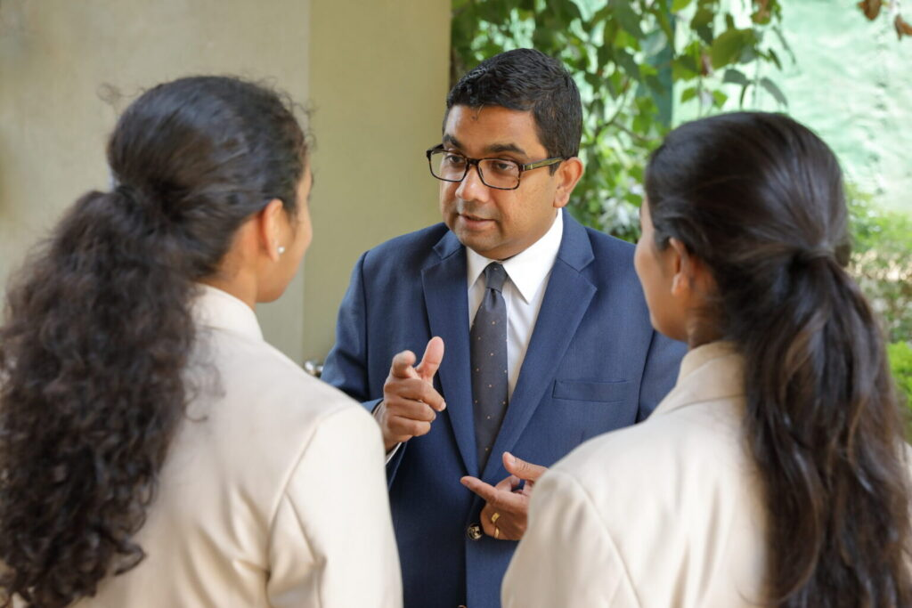

Mr. Harshana Perera had his primary and secondary education at S. Thomas College Mount Lavinia where he excelled in Academics and Co-curricular activities securing the office of a school prefect in 1991. He was the leader of the English Debating Team, Member of the prestigious School choir and the Western Band.
He gained entry to the Law Faculty of the University of Colombo where he read for a Bachelor of Laws degree and was awarded the LLB Degree by the University. He then entered Sri Lanka Law College where he obtained a first class honours pass at the Attorneys final examination. He was awarded the prestigious Sir Cyril de Soyza gold medal for the Address to the Jury competition and was also a member of the Law College debating team. He took oaths as an Attorney at Law of the Supreme Court in December 1996.
Mr. Perera is a fully qualified Management Accountant of the Chartered Institute of Management Accountants (CIMA) UK. He passed the final examination of CIMA with distinction being awarded the Angelo M. Patrick prize for the Best Performance in the subject Strategic Management Accounting and Marketing in CIMA Stage IV.
He obtained his Master's in Business Administration (MBA) from the Postgraduate Institute of Management of the University of Sri Jayewardenepura in 2010 where he completed a research on Training and Developing Primary School teachers. His dissertation was commended by the Academic Board for its practicality and relevance to the educational sector. He was also the valedictorian of the MBA class.
Mr. Perera started his working life as an Industrial Relations Advisor attached to the Employers' Federation of Ceylon. In this capacity, he worked with many Business Establishments in the private sector offering them advice and consultancy in Labour Law, Industrial relations, Human Resource Development and Company re-structuring. He was also a much sought-after trainer of executives. He has presented papers and represented the country at several International Conferences of the International Labour Organization on topics ranging from Occupational Safety and Health to Sexual Harassment at the work place. He has attended International training programmes in Tokyo, Manila, Geneva, Dublin and Penang.
Mr. Perera served as the Sub Warden (Deputy Head) of S. Thomas' College Mount Lavinia from 2002 to August 2011. He was responsible for the management of a tutorial staff of over 150 while being overall responsible for the discipline of a student population in excess of 2500. He gained the confidence of all stakeholders in lifting the standards of both academics and extracurricular activities during his tenure. Mr. Perera was instrumental in re introducing instructions in the English Medium at S. Thomas College which was successfully implemented during his period of office. The capacity of the staff was developed by establishing a dedicated Staff Resource Centre. He was famed for his significant strength in pastoral care and was highly respected by both parents and students for the manner in which he handled issues of education and formation of adolescent boys. Mr Perera also functioned as the Acting Warden of the school on numerous occasions including a period of 10 months in 2008/2009 where he steered the school single handedly. The school consolidated its position as a premier Private Boy's School offering the National Education Curriculum in Sri Lanka. Mr Harshana Perera was also appointed as an Advisor to the Ministry of Education on Religious Education during this period.
Mr. Harshana Perera then functioned as the Chief Operating Officer of Imperial Institute of Higher Education (IIHE) which is the only Institute in Sri Lanka validated by the prestigious University of Wales in the UK. IIHE offers Bachelor's Degree programmes in Management and Software Engineering and a MBA programme which is considered to be the most recognized MBA offered in Sri Lanka at the time. He was also responsible for introducing the Diploma in Hospitality and Tourism from Institute of Hospitality (UK). This was the first time that this Diploma program was introduced to South Asia. Mr. Perera is credited with having introduced streamlined processes to IIHE in a very short space of time.
Mr. Harshana Perera joined Gateway College Colombo in 2013, first as Deputy Principal and then promoted as Principal in January 2014. Gateway College with a student population of 1,800 is one of four schools belonging to the Gateway Group. He gave leadership to a tutorial staff in excess of 150 and spearheaded the activities to make Gateway College Colombo one of the most respected and recognized International Schools in Sri Lanka. The school witnessed phenomenal progress in infrastructure including a New Secondary School Library, a New Swimming Pool, Tennis Court and refurbished Basketball Court during his tenure as Principal. The students also secured many High Achiever Awards and World Prizes at the Edexcel Awards Nights under his period of his stewardship. He was instrumental in building a strong bond of unity among the student body and instilled discipline in a firm, fair and friendly manner. Mr. Perera managed to make Gateway College synonymous with high quality education through a collaborative approach to teaching and learning and persuasive leadership.
In March 2017, Mr. Harshana Perera took over as Principal of Asian International School, which had a glorious past as a much sought-after international school in Colombo. Mr. Perera immediately got down to the task of rebuilding the school's image and ethos which had suffered a setback due to uncertainty and instability. Mr. Perera gave priority to professional development of staff and encouraged all teachers to attend Continuous Professional Development (CPD) sessions which were conducted frequently. Every teacher was mandatorily required to give priority to their own CPD and many were encouraged to also undertake Post Graduate diplomas and Master's qualifications.
The school was placed on an innovative drive with the setting up of a dedicated innovation center in collaboration with Create Labs in Singapore and Igniter Space. This enabled students to extend their book learning to hands on creativity. The children in the Elementary School were introduced to the exciting world of LEGO based education. These activities were made part of the general curriculum in class which provided equal opportunity for all.
For the first time an information management system was introduced with Akura Information System. This ensured the integrity of data maintained in school and enabled faster communication between parents and the school. The fee collection mechanism was also streamlined with the possibility of making online payments through many major banks.
Mr. Perera identified the importance of incorporating technology to the classroom at a very early stage. All classes from Year 1 to Year 9 were equipped with Smart Boards while teachers were given extensive training in their use. The entire campus was wifi enabled and the school received a site license from Microsoft as an educational facility. This made it possible for the school to be one of the first to re-open with online classes in April 2020 during the period of a national lockdown. AIS teachers are now experts in the use of tools and features offered by MS Teams. The students were thereby able to continue with their lessons, complete the academic year and progress to the higher grades despite constraints of movement.
The emphasis on all-round education was given an impetus with the introduction of new sports such as Karate, Archery, Badminton, Soccer, Contemporary Dance and Synchronized Swimming. The strong tradition in Theater and Performing Arts was maintained with sell-out performances at the musicals 'Rock of Ages' and 'Fame Jr.' AIS is now the dominant force in school Rowing having secured many titles to its credit. Sports such as Swimming and Basketball continue to attract large numbers of students with enthusiasm.
Mr. Perera closely monitors aspects of pastoral care and delivery of world-class holistic education in a pluralistic school environment. The Principal always underlines the values of respect and equality to be upheld at all times at Asian International School, where children will feel safe, welcome and happy to spend their days in discovering themselves.
In May 2022, Mr. Harshana Perera took over the reigns as Chairman of The International Schools of Sri Lanka (TISSL) which is a trade association comprising of 24 leading international schools operating in the country. As Chairman, he has spearheaded the activities of TISSL which aim to promote global best practices in education, increased collaboration among schools and build camaraderie among school communities.

Get to know the academic leaders guiding our students.
Academic Leadership Board of Directors